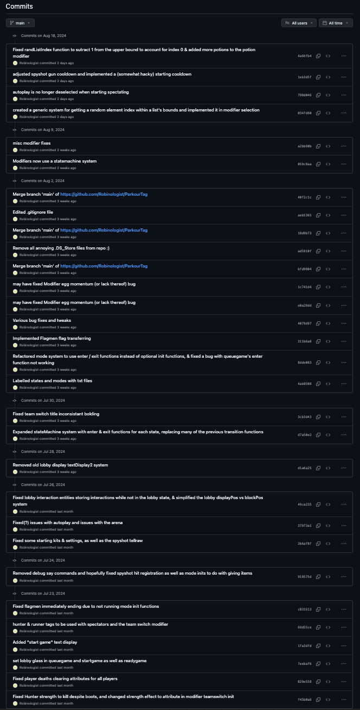

Parkour Tag (abbreviated to PKT) is a long-term programming passion-project I've been working on from October of 2021 up until the present day.
In short, PKT is a game I programmed for my friends to play within Minecraft, using the game's built-in datapack programming language. Throughout the years I've updated it many times to add new gamemodes, features, and bug-fixes, and I've ended up completely refactoring and redesigning the game multiple times from the ground up to incorporate new programming skills and techniques that I learn.
Diciplines
Parkour Tag as a project has encompassed many of the artistic disciplines I love, including visual art, music, video editing, and, of course, programming.
I think the thing that best shows how these mediums intersect is the trailer I made in December of 2022 to announce the next version of PKT that I had been working on in secret.

Organization
In order to better manage and keep track of Parkour Tag progress, I started a private Trello board as a TODO list and taught myself to use Github for version control.
Developing a Github workflow was a particularly helpful skill, not just for PKT development, but other projects as well.
Community
As Parkour Tag is a small game designed for my friends to play, I take lots of feedback from said friends and frequently implement their ideas.
My friend group's Discord server has a forum channel specifically for PKT bug reports and miscellaneous suggestions (see below), as well as a channel I use to post changelogs for each update and blog-like accounts of programming challenges I run into and their solutions.